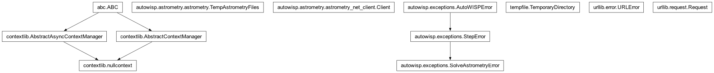

autowisp.astrometry.astrometry module
Class Inheritance Diagram

Fit for a transformation between sky and image coordinates.
- class autowisp.astrometry.astrometry.TempAstrometryFiles(file_types=('sources', 'corr', 'config'))[source]
Bases:
objectContext manager for the temporary files needed for astrometry.
- autowisp.astrometry.astrometry._ansvr_bash()[source]
Return the ANSVR cygwin
bashpath on Windows if installed, else None.ANSVR (https://adgsoftware.com/ansvr/) is how
solve-fieldis provided on Windows; itssolve-fieldis a cygwin binary invoked through this bash, so it never appears on the Windows PATH.
- autowisp.astrometry.astrometry.create_config_file(config_fname, fov_range, anet_indices)[source]
Create configuration file set up to solve images FOV in given range.
- autowisp.astrometry.astrometry.create_sources_file(xy_extracted, sources_fname)[source]
Create a FITS BinTable file with the given name containing the extracted sources.
Returns: an array containing x-y extracted sources
- autowisp.astrometry.astrometry.estimate_transformation(*, config, **initial_corr_kwarg)[source]
Attempt to estimate the sky-to-frame transformation for given DR file.
- autowisp.astrometry.astrometry.estimate_transformation_from_corr(initial_corr, tweak_order, astrometry_order, x_cent, y_cent)[source]
Estimate the transformation from astrometry.net correspondence file.
- Parameters:
initial_corr (structured numpy array) – The correspondence file containing field_x, field_y, index_ra, and index_dec
tweak_order (int) – The order of the astrometry.net transformation
astrometry_order (int) – The order of the transformation that will be fit. Fills terms of higher order than tweak_order with zeros.
x_cent (float) – The x pixel coordinate of the frame center (used as the reference point for the gnomonic projection).
y_cent (float) – The y pixel coordinate of the frame center (used as the reference point for the gnomonic projection).
- Returns:
- ra_cent: The RA corresponding to (x_cent, y_cent) coordinate in the
image.
- dec_cent: The Dec corresponding to (x_cent, y_cent) coordinate in
the image.
- trans_x:
Estimate of the transformation coefficients for x(xi, eta)
- trans_y:
Estimate of the transformation coefficients for y(xi, eta)
- Return type:
- autowisp.astrometry.astrometry.find_ra_dec(xieta_guess, trans_x, trans_y, radec_cent, frame_x, frame_y)[source]
Find the RA and Dec corresponding to given pixel coordinates in the frame.
Solves for the gnomonic-projection coordinates (xi, eta) that map to the given frame pixel position via the polynomial astrometric transformation, then converts (xi, eta) to sky coordinates via inverse gnomonic projection.
- Parameters:
xieta_guess (numpy array) – Starting point for the solver trying to find (xi, eta) that map to the given coordinates.
trans_x (numpy array) – Polynomial transformation coefficients for x, shape (n_terms, 1).
trans_y (numpy array) – Polynomial transformation coefficients for y, shape (n_terms, 1).
radec_cent (dict) – The RA and Dec of the center of the gnomonic projection defining (xi, eta).
frame_x (float) – x coordinate for which to find RA, Dec.
frame_y (float) – y coordinate for which to find RA, Dec.
- Returns:
- A dictionary with keys
'RA'and'Dec'(both float), giving the sky coordinates corresponding to the given frame position.
- A dictionary with keys
- Return type:
- autowisp.astrometry.astrometry.get_initial_corr(*, dr_file, xy_extracted, config, header=None, web_lock=None)[source]
Attempt to estimate the sky-to-frame transformation for given DR file.
- autowisp.astrometry.astrometry.get_initial_corr_local(header, xy_extracted, tweak_order_range, fov_range, anet_indices)[source]
Get inital extracted to catalog source match using
solve-field.
- autowisp.astrometry.astrometry.get_initial_corr_web(header, xy_extracted, tweak_order_range, fov_range, api_key)[source]
Get initial extracted-to-catalog match via web astrometry.net.
- autowisp.astrometry.astrometry.local_solver_available()[source]
Whether a local
solve-fieldcan be invoked (native or via ANSVR).
- autowisp.astrometry.astrometry.refine_transformation(*, astrometry_order, max_srcmatch_distance, max_iterations, trans_threshold, trans_x, trans_y, ra_cent, dec_cent, x_frame, y_frame, xy_extracted, catalog, min_source_safety_factor=5.0)[source]
Iterate the process until we get a transformation that its difference from the previous one is less than a threshold
- Parameters:
astrometry_order (int) – The order of the transformation to fit
max_srcmatch_distance (float) – The upper bound distance in the KD tree
trans_threshold (float) – The threshold for the difference of two consecutive transformations
trans_x (numpy array) – Initial estimate for the x transformation matrix
trans_y (numpy array) – Initial estimate for the y transformation matrix
ra_cent (float) – Initial estimate for the RA of the center of the frame
dec_cent (float) – Initial estimate for the Dec of the center of the frame
x_frame (float) – length of the frame in pixels
y_frame (float) – width of the frame in pixels
xy_extracted (structured numpy array) – x and y of the extracted sources of the frame
catalog (pandas.DataFrame) – The catalog of sources to match to
- Returns:
the coefficients of the x(xi, eta) transformation
- trans_y(2D numpy array):
the coefficients of the y(xi, eta) transformation
- cat_extracted_corr(structured numpy array):
the catalogs extracted correspondence indexes
res_rms(float): the residual
ratio(float): the ratio of matched to unmatched
ra_cent(float): the new RA center array
dec_cent(float): the new Dec center array
- Return type:
trans_x(2D numpy array)
- autowisp.astrometry.astrometry.transformation_matrix(astrometry_order, xi, eta)[source]
Constructs the transformation matrix for a given astrometry order.
- Parameters:
astrometry_order (int) – The order of the transformation to fit
xi (numpy.ndarray) – from projected coordinates
eta (numpy.ndarray) – from projected coordinates
- Returns:
transformation matrix
- Return type:
trans_matrix(numpy.ndarray)
Notes
Ex: for astrometry_order 2: 1, xi, eta, xi^2, xi*eta, eta^2